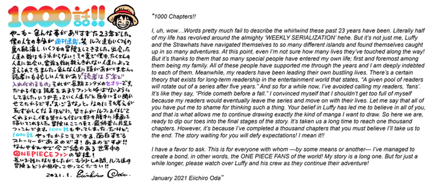
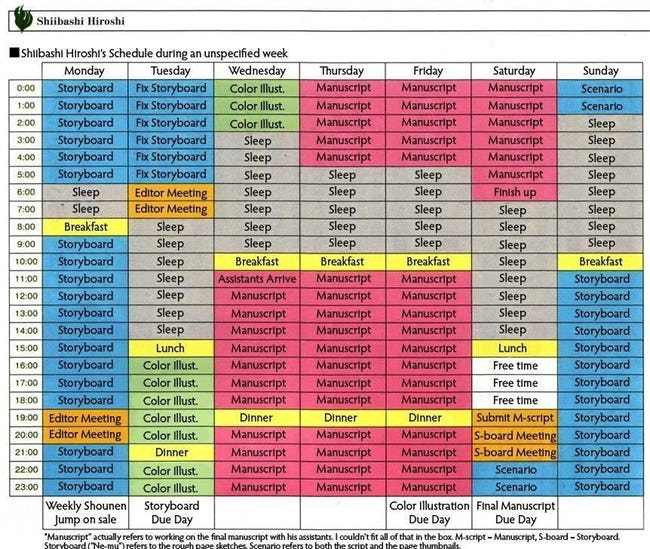

One PieceManga
Below is Oda’s latest letter to the readers, marking the milestone.
Eiichiro Oda has some good advice for new creators. While the One Piece's creator advice might be brutal, it's both honest and useful.
Pretty much everyone who reads manga has at some point fantasized about making it. The backbreaking difficulties of the process sometimes ward people away. Still, the appeal of a contest where some of the greatest manga writers of all time review your work is very tempting for ambitious manga creators.
For the 100th Tezuka Manga Contest, victory means publication in Weekly Shonen Jump and praise from both Tezuka Productions and manga writers like Akira Toriyama (Dragon Ball, Dr. Slump), Kazue Kato (Blue Exorcist), Kohei Horikoshi (My Hero Academia), Takehiko Inoue (Slam Dunk) and Eiichiro Oda (One Piece). All of these manga-ka give prospective contestants advice. While Oda's advice is notably harsh, it's also incredibly useful and practical.
Many of the judges give softer advice. Toriyama's advice, for example, is purely inspirational. "With manga, one person can create an entertainment that is like a movie or a TV show, if they really want to. Dear manga lovers around the world, why not take this opportunity to create something where many people can become passionate about your works? I am waiting for you!"
Kato looks forward to looking at international manga outside of Japan, while both Horikoshi and Inoue emphasize the importance of well-written characters with strong motivation and conflicts preventing them from reaching their goals.
Oda's advice, however, is a noticeably practical, but also more critical, response. "If the story you want to draw is similar to something that is already popular, find something else to draw. I prefer to read a manga that is bad but something only you can draw, more than something good but similar to another artist's work!! Just try!!"
Oda is the only person on the panel who says "Don't do this," which might come across as overly critical or negative to an outside reader. Creators obviously draw from sources of inspiration. Oda himself drew inspiration from Toriyama's Dragon Ball, after all. However, One Piece is distinctive from Dragon Ball. Likewise, he and Masashi Kishimoto used one another as sources of inspiration for their work, with Kishimoto distinctly avoiding what Oda did with One Piece in order to make Naruto stand out more. Oda originally wanted to call Sanji "Naruto," but changed it to avoid conflict with Naruto. Oda understands that making work distinct is more important than making it necessarily "good," because unique works stand out.
Consider the majority of mecha anime. While many draw from one another for inspiration, the ones that stand out most are the ones that broke the mold. Innovative series like Mazinger Z, Mobile Suit Gundam and Neon Genesis Evangelion are far better remembered than even quality follow-ups and imitators like Getter Robo, Armored Fleet Dairugger XV and Rahxephon.
Weekly Shonen Jump cancels manga if they don't stand out immediately, so Oda knows what he's talking about. If you're making a manga, make it original, even your work isn't technically great. A beautifully written rip-off of Dragon Ball will never leave Dragon Ball's shadow.
Eiichiro Oda has many accolades under his name, from producing the highest selling manga in history to being the richest manga artist presently, since Akira Toriyama (Dragon Ball).
Editors who’ve worked with him describe him as a “machine,”, who in his prime never stopped. Critics describe him as one of the hardest working artist in the industry and he’s taken his dedication to his craft so far that in past he’s been hospitalised.
Oda wakes up at 5.a.m. in the morning. Works all day and goes to sleep at 2.a.m. in the night.
This was his sleep schedule before 2013 when he was hospitalised due to health concerns. His sleep schedule consisted of only 3 hours sleep during the week. After he hands in the manuscript by the end of the week, he takes one whole day and sleeps off the rest of his week. Oda undercuts his sleep and he’s been doing it ever since his series One Piece grew to popularity in the early 2000s.
Look at this:
Here is is the work schedule for another manga artist, Shibashi Hiroshi, who is known for the series Nura: Rise of the Yokai Clan. His sleeping pattern, unlike Oda is scattered.
On some days he sleeps the full 8 hours and on others it’s 2. Though as the week progresses, he gets more sleep, but how can anyone be able to function despite having a messed up sleeping pattern like this.
Monday-Wednesday: Layout planning and character dialogue ● Thursday-Saturday: Drawing and inking ● Sunday: Coloring and other tasks. — Japan Today
Like most artists, he doesn’t have the weekends off and continues to work even harder during those periods. When his editors, who are known to be strict with deadlines call him a machine, you know he’s the real deal.
Currently One Piece is on it’s 960th chapter and Oda has been following the same schedule for most of his 20 year career.
A former one piece editor by the name of Naoki Kawashima recalls that when he took over as editor for One Piece, Oda told him to “die for one piece”. He laughed it off as a joke, thinking that Oda had a weird sense of humour. Later he was introduced to Oda’s work ethic and was shocked to see how extreme his dedication was.
However, on his days off you might be wondering what he does. Oda spoke in an article by Japan Today saying “I meet up with my old assistants, or with other manga artists or friends who have helped me out, and we catch up with each other and talk about what we’ve been up to.”
So even when he’s not working on Manga he’s still talking on Manga.
We get you Oda, you’re a real dweeb you know that.
The sales and popularity haven’t dwindled over the years. His health drops sometimes, but that doesn't affect his ability to churn out quality chapters.
One Piece has been king for a very long time, in terms of popularity and sales. There have been competitors for the crown, yet they’ve only managed to shake the throne not the king.
This is just a testament to Oda’s ability to work hard even at the cost of his health. This also proves that if you want to be a successful manga artist on the same level as Oda, Kishimoto (Naruto) or Isayama (Attack on titan), then you need to have a extreme dedication to your craft.
It clearly shows that in the Manga Industry, hardwork pays off and for someone like Oda whose swimming in millions it has certainly paid off to him.